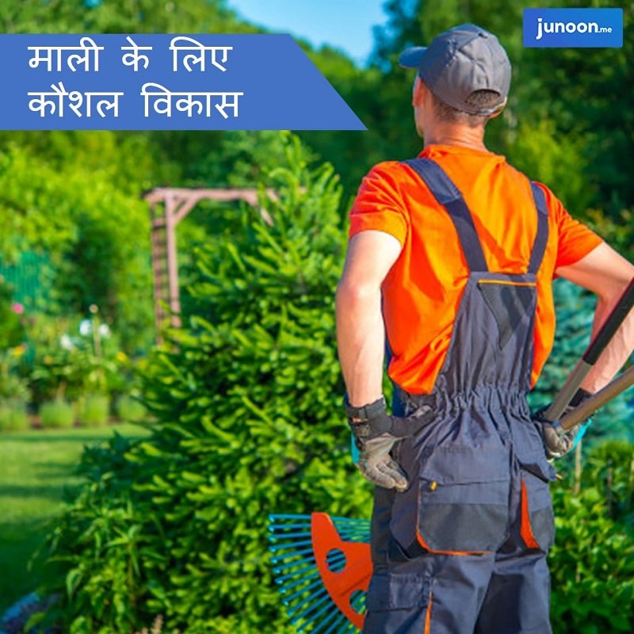

विभिन्न प्रकार के उद्यानों, पार्कों और हरे भरे स्थानों को डिजाइन करने, विकसित करने और बनाए रखने के लिए बागवान या माली जिम्मेदार हैं। बागवानी एक कठिन काम है, जहां एक माली को विभिन्न पेड़ों, पौधों, झाड़ियों और जड़ी-बूटियों की प्रकृति के बारे में जानकारी होनी चाहिए। बागवानों को नर्सरी में भी रोजगार मिलता है, जहां पौधों और पेड़ों को बगीचों और पार्कों में बिक्री या रोपण के लिए उगाया जाता है। बागवानी का बेसिक स्किल ही इस क्षेत्र में नौकरी पाने की संभावना को बढ़ाने के लिए पर्याप्त माना जा सकता है। उचित एवं सही बागवानी प्रशिक्षण के साथ, आप उनके ज्ञान, क्षमता और योग्यता को बढ़ा सकते हैं। इन दिनों नियोक्ता पेशेवर बागवानों की तलाश रहती है जो जिम्मेदारियों को लेने में सक्षम हों और चुनौतीपूर्ण स्थितियों को मैनेज करने की क्षमता दिखा सकते हों।

माली के लिए कौशल विकास क्या है?
बागवानी के हार्ड स्किल दुर्लभ पौधों और पेड़ों को कुशलता से पालन पोषण करने में मदद करते हैं। इस दायरे में बेसिक स्किल्स में निम्नलिखित शामिल हैंः
- पेड़, झाड़ियाँ, और घास उगाना
- घास और लॉन उगाना
- घास और लॉन काटना
- पेड़ पौधों की देखभाल करना
- सिंचाई प्रणाली को मैनेज करना
- पौधों की खरीद एवं उन्हें उगाना
बागवानी के बुनियादी ज्ञान के साथ, एक माली बुनियादी जिम्मेदारियों को मैनेज कर सकता है, लेकिन इस क्षेत्र में पेशेवर होना पर्याप्त नहीं है। आधुनिक समय में उपयुक्त माली होने के लिए कई साॅफ्ट और कोर स्किल समान रूप से महत्वपूर्ण हैं। बागवानी कक्षाओं में इन सभी विकसित लेकिन आवश्यक कौशल को आज के बागवानों की रोजगार क्षमता को बढ़ाने के लिए विस्तृत रूप से सिखाया जाता है।
बागवानी प्रशिक्षण क्यों महत्वपूर्ण है?
सॉफ्ट और कोर स्किल बागवानी के बुनियादी कौशल के रूप में महत्वपूर्ण हैं। आज के नियोक्ता पेशेवर बागवानों की तलाश करते हैं जो बगीचे की पूरी जिम्मेदारी संभाल सकते हों या जो कम से कम कनिष्ठ बागवानों की एक टीम को मैनेज कर सकते हों। यह वह जगह है जहां प्रभावी रूप से फील्डवर्क के विभिन्न पहलुओं पर ऑनलाइन प्रशिक्षण कार्यक्रम दिया जाता है। आइए देखें कि एक पेशे के रूप में बागवानी में ये साॅफ्ट और कोर स्किल क्या हैंः
वनस्पति विज्ञान (बाॅटनी) के बारे में ज्ञान
यह वह ज्ञान है जो एक ही रात में माली का कैरियर बदल सकता है। पौधों के बारे में गहन ज्ञान, उनकी विशेषताओं, पौधों पर पर्यावरणीय प्रभाव, प्रतिकूल मौसम की स्थिति में पौधों को कैसे जीवित रखना है, और कैसे एक बगीचे को कुशलतापूर्वक बनाए रखना है, खेती की तकनीक, कृषि विज्ञान आदि कुछ ऐसे क्षेत्र हैं जहां बागवानों को पर्याप्त रूप से जानकार होना चाहिए।
मशीनों का उपयोग करने का ज्ञान
आज के माली विभिन्न मशीनों से काम करते हैं, जिनमें से कुछ स्वचालित भी होती हैं। इस विभिन्न उपकरणों का ज्ञान पेशेवर माली के लिए बहुत जरूरी है जो इस क्षेत्र में उत्कृष्टता प्राप्त करना चाहते हैं। बागवानों के लिए ऑनलाइन प्रशिक्षण में उनकी जिम्मेदारी का हिस्सा भी शामिल है। इसके साथ ही, उपकरण कैसे काम करता है, इस पर मुख्य ज्ञान विकसित करना, एक पेशेवर माली भविष्य में आने वाली नई तकनीकों के अनुकूल हो जाएगा।
ऑर्गेनाइजेशनल स्किल
यह इस नौकरी के बारे में गंभीरता से विचार कर रहे बागवानों के लिए एक आवश्यक कौशल है। उन्हें बगीचे या पार्क को एक संगठन के रूप में मानना चाहिए जहां कई संसाधनों का उपयोग किया जाता है, इनोवेटरीज को बनाए रखा जाना है, पेड़ और पौधों को वैज्ञानिक रूप से पुनर्जीवित किया जाना है, आगंतुकों को पेशेवर रूप से नियंत्रित किया जाना है, और खर्चों को नियंत्रित करना है। इस क्षेत्र में प्रशिक्षण पाठ्यक्रम जिसमें एक ऑर्गेनाइजेशनल स्किल विकसित करना शामिल है, ताकि एक माली में एक पेशेवर मानसिकता का विकास हो सके।
कम्यूनिकेशन स्किल
हर क्षेत्र की तरह, यहाँ भी, कम्यूनिकेशन स्किल बागवानी में महत्वपूर्ण भूमिका निभाता है। संचार के कई पहलू हैं जिन्हें अच्छे ज्ञान की आवश्यकता है। नियोक्ता, टीम के सदस्यों, आगंतुकों और कानूनी अधिकारियों के साथ संचार विभिन्न रूप और प्रक्रिया अपनाते हैं। गार्डनिंग क्लासेज प्रभावी कम्यूनिकेशन स्किल विकसित करने में मदद करती हैं।
इसके अलावा, अन्य सॉफ्ट और कोर स्किल्स के साथ-साथ टीम मैनेजमेंट स्किल्स, डिटेल्स, वॉटर मैनेजमेंट आदि पर भी ध्यान दिया जाता है, इन ऑनलाइन कोर्सेज में भी बराबर ध्यान दिया जाता है।
नौकरी पाने के लिए आॅनलाइन बागवानी पाठ्यक्रम कैसे आपकी मदद करता है?
ऑनलाइन प्रशिक्षण अत्यधिक लचीला और अच्छी तरह से डिजाइन किया गया है। इस क्षेत्र में वर्तमान आवश्यकताओं के लिए पाठ्यक्रम को उपयुक्त बनाया गया है। जूनून विभिन्न प्रमाणित पाठ्यक्रम प्रदान करता है, जो एक व्यक्ति को एक प्राॅफेशन के रूप में बदल देता है और उपयुक्त नौकरियां भी देता है। वे आपको तैयार करने में हर संभव मदद करते हैं और आपको हर तरह से योग्य बनाते हैं और नौकरी पाने के अवसर को बढ़ाते हैं।